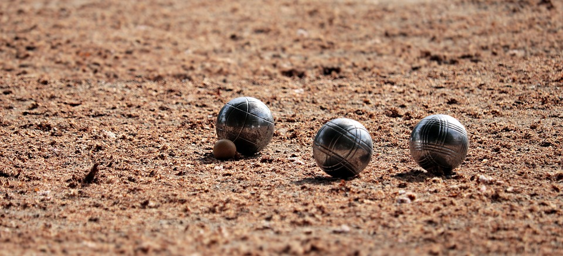
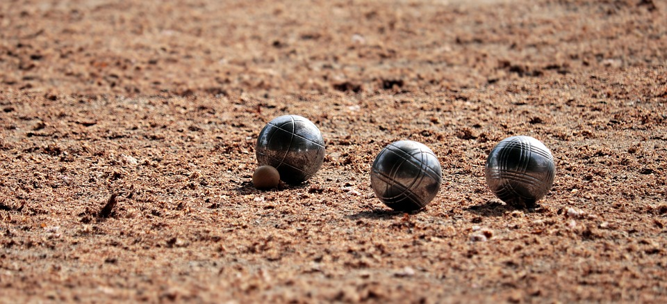
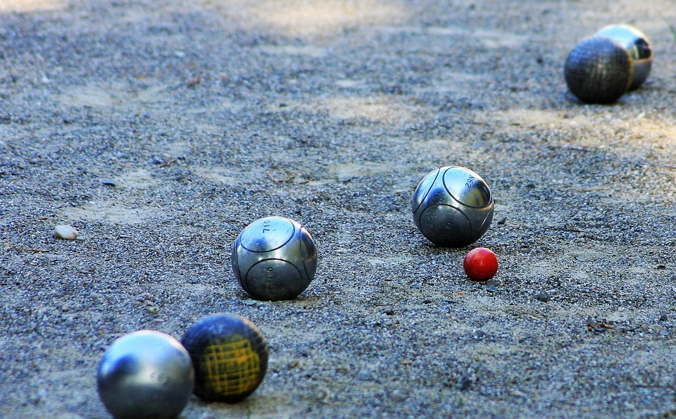
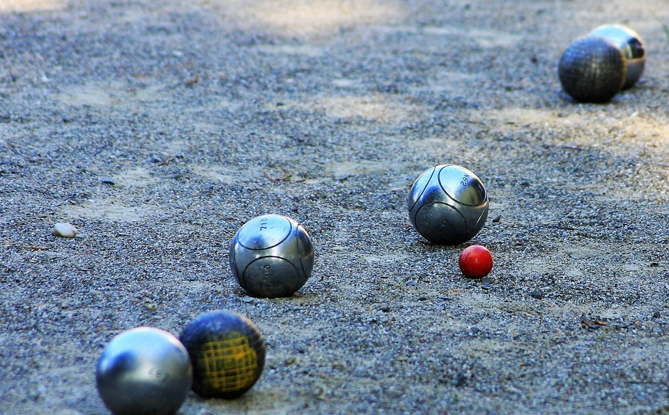

 

Présentation de la société
Bienvenue sur le site de la TPJN. Nous sommes un groupe de 3 personnes ayant eu l’idée de monter une association pour que toutes les personnes des Hauts-de-France puissent s’amuser dans ce magnifique sport. Nous avons conscience que trouver des personnes pour jouer à la pétanque n’est pas la chose la plus facile, alors nous cherchons pour vous. Comme notre nom vous l’indique, nous organisons des tournois le jour, mais également la nuit pour profiter de jouer sous les belles étoiles.
présentation des préstation
Pour vous inscrire, c’est très simple, il vous suffira de prendre connaissance du prochain lieu et des prochaines dates auxquelles aura lieu les tournois. Ne vous inquiétez pas, si jamais vous avez soif ou faim, nous vous proposons plusieurs services de restaurations.
À bientôt sur les terrains de la TPJN !